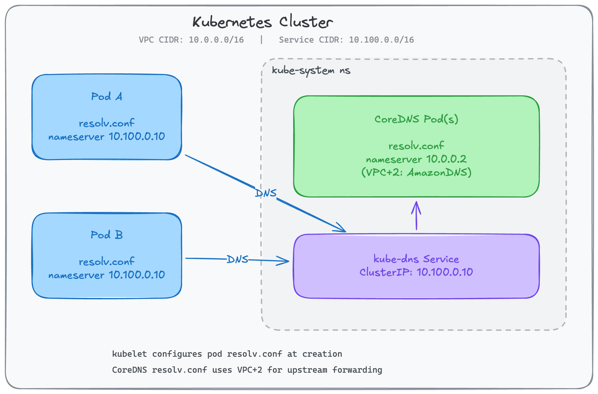
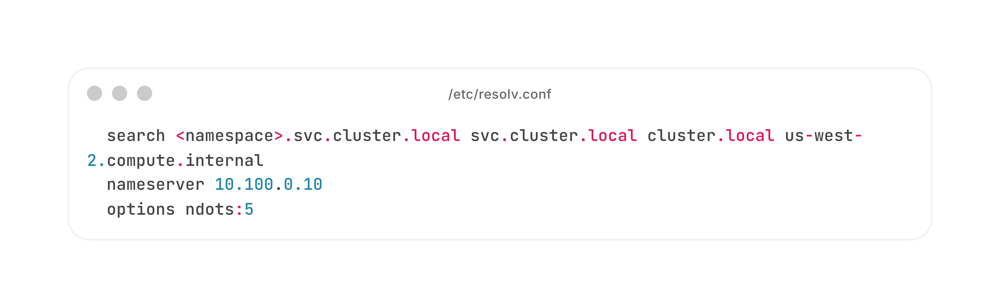
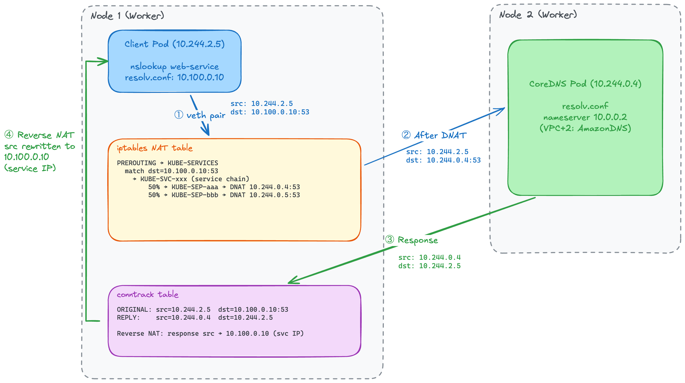
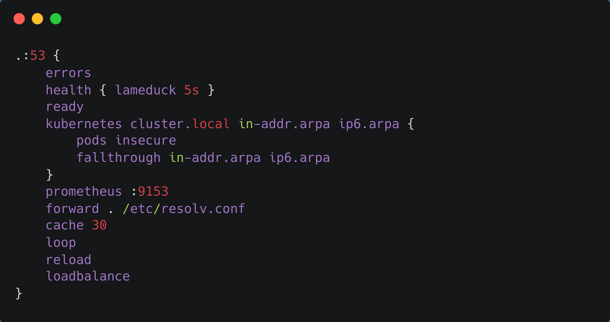

Same ns: web-service
Cross ns: web-service.prod
FQDN: web-service.prod.svc.cluster.local
Returns ClusterIP address
Format: <pod-ip-dashed>.<ns>.pod.cluster.local
Example: 10-244-1-4.default.pod.cluster.local
Returns PodIP address
CoreDNS proxies to upstream resolvers
VPC+2 for EKS clusters
ndots:5 can cause extra lookups!


Watches Services, Endpoints/EndpointSlices, etc.
Maintains a local cache using informers.
Resolves *.svc.cluster.local names.
Returns ClusterIP for service queries.
Proxies queries to upstream DNS.
Uses node's /etc/resolv.conf.
Handles all external domain lookups.
Default TTL: 30 seconds.
Reduces repeated plugin chain processing.
Reduces load on upstream DNS.